Game Projects
On this page you will find a collection of all games that I have worked on or am working on
On this page you will find a collection of all games that I have worked on or am working on
Two Worlds is a 2-D isometric puzzle game where you have to get the cube from start to finish.
The game currently consists of 9 short levels that start out simple and get more complicated as you progress.
The game can be downloaded and played here.
This is my first game that I had started working on in Unity and it was used primarily to get used to the whole framework
and workflow. I initially had thought that the development of the project would be relatively simple but there was a
lot of issues regarding sprite sorting among other things that extended the estimated finish date by a decent margin. However,
as eager as I was on my first project, it was definitely a great learning experience as I was developing my knowledge with working
with Unity and turned out to be a relaxing little puzzle game.
The initial idea for the puzzle game came when I was watching one of my favorite game dev youtubers for pixel art and saw he had
made a video on isometric pixel art tiles. Since the project itself was more of a learning process for myself rather than making
an actual game, I had thought that I would do a simple yet unique puzzle game that consisted of two worlds: one world has the player
where he/she can move around in and the other world has statues that can alter the main world's tiles. This along with the
isometric pixel art style was something that I found very pleasant to design. The original thought process was to make the game for the mobile platform which is actually why the game is played only using the
mouse. However, since the project was just a learning experience, I decided to just leave it as a very short PC game.
The game has:
This game has no name as I currently am working on it. It is an endless runner that makes use
of gravity to move up or down.
Check out the devlog of the game here.
Although I already have some experience with 3D, this game effectively serves as my true introduction into Unity 3-D.
With that being said, I wanted to make something that was simple and easy to understand, and also playable whenever, so
I opted to make this game for the mobile platform. The game itself is a simple concept, a ball (the player) travels from left
to right, and gravity will make it fall downward or upward depending on if the player taps and holds the screen or not. This
idea of taking a simple concept and making it good rather than trying to do many things at once is something I am focusing on
for this game.
Since the overall game idea is simple, I wanted to take the chance to learn more intermediate level coding concepts with this
project such as interfaces and events. This would help solidify my understanding of object-oriented programming methodologies
and use them in a way that makes my code modular and usable for future applications. I also decided to practice using Unity's
shader graph to ease myself into rendering effects rather than learning the code directly. One particular art style that I
like is toon/cel-shading where the characters and environment take on more of a cartoon-ish anime look. I decided to attempt
that kind of style in my game because I wanted to explore the concept and learn how it works considering I would try and
use it at some point in the future.
The game currently has:
 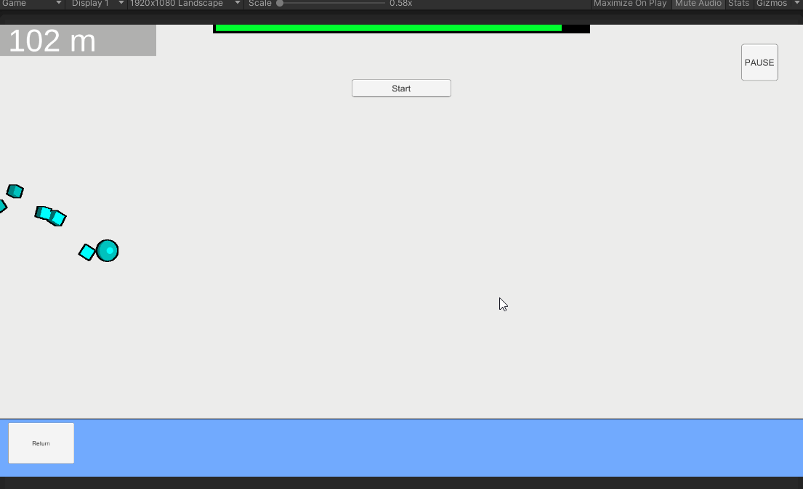
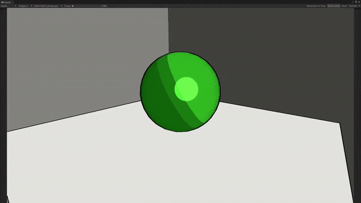
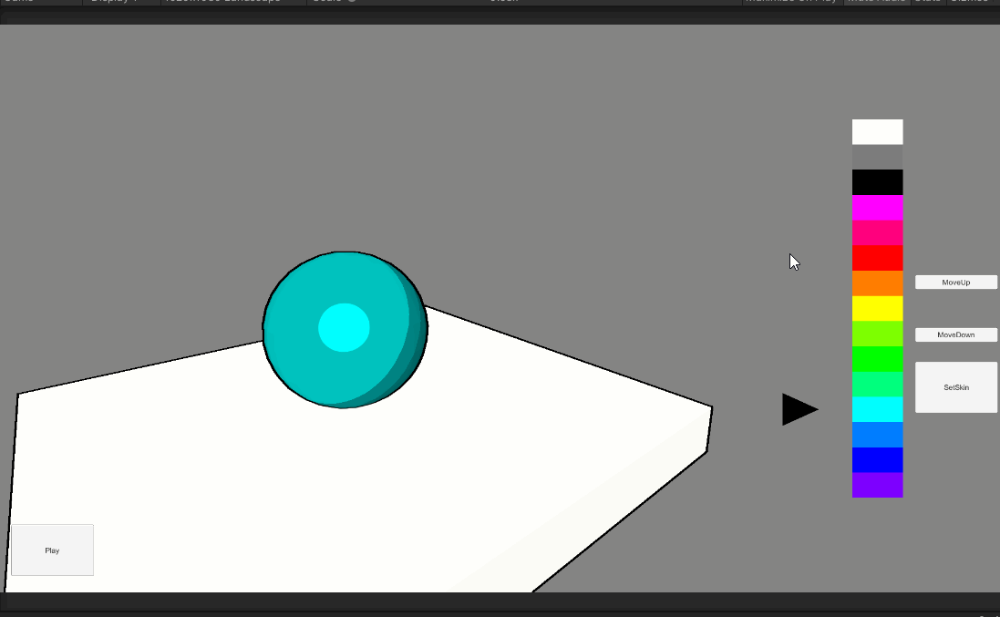
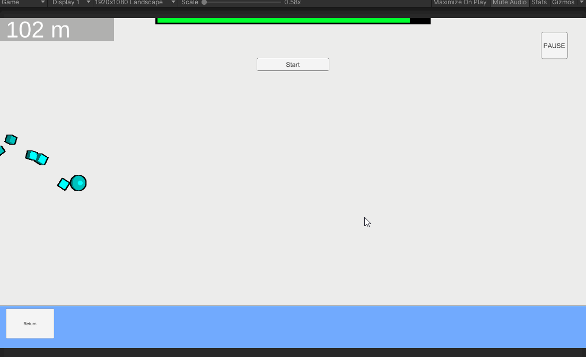
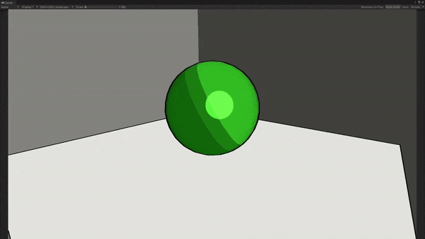
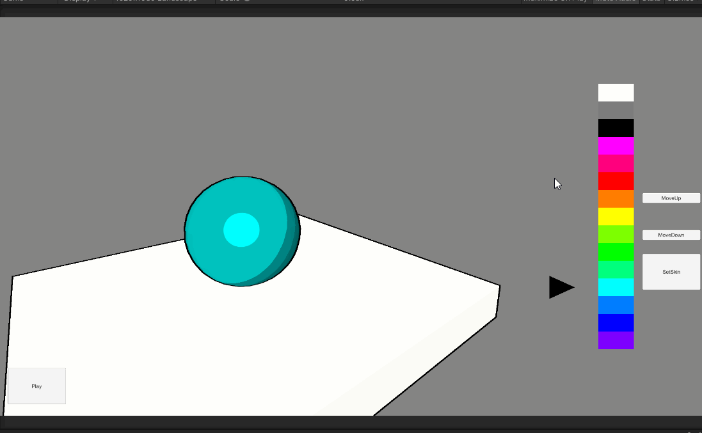
Enherjar Synergy is a multiplayer FPS with multiple game-modes, a ranking system, various armors
and weapons, and a custom game mode. The game has an emphasis on Esports and competitive play.
The game can be found here.
I was brought in as a freelance software developer to implement various things such as an armory system, daily missions,
etc. I also debugged various issues through several playtests and work with the main designer of the game to create UIs
for menus and settings as well as fixes for maps. As I joined the team with a deadline for the game approaching, I had to
adapt quickly to the current codebase and work on tasks quickly and efficiently to finish by those deadlines. I was given
tasks and reported to the main designer weekly so that we could assess what to do as needed for upcoming weeks.
Things that I programmed and implemented:
The Jade Room is a 2-D pixel art platformer made for the game jam Indie Tales Jam.
The game consists of 3 very short levels with simple platforming.
The game can be downloaded and played here.
The game jam that this game was made and submitted for was the first game jam I had ever done. With the given time frame
of about 72 hours, I felt that it would be a good chance to use some more of the tools that Unity had to offer which
included the in-built lighting system. I had joined this game jam shortly after I had started working on
Two Worlds which allowed me to explore in-depth sprite sheet
implementation, sprite animations and camera movements.
The idea in itself is not very unique since it is just a very generic 2-D platformer with a partially amusing storyline.
You play as a character who attempts to steal a jade from a temple, but with each attempt more obstacles/enemies appear.
The dialogue in the game shows your character communicating with your boss/leader who likes to joke around and makes sure
that you are doing your job.
I mainly saw this game as a means of coming up with an idea for a project and finishing it.
Given that my initial ideas for the game involved having 5 levels with much more difficult platforming, I think that this
helped me understand and shrink my scope so that I could at least finish something. That is what I think game jams are
all about, putting a finished game product out there. My whole first experience of a game jam sums up what I believe
to be the importance of making any game, which is to understand the scope and design of your game and finishing/putting
something out there no matter what.
The game has:
 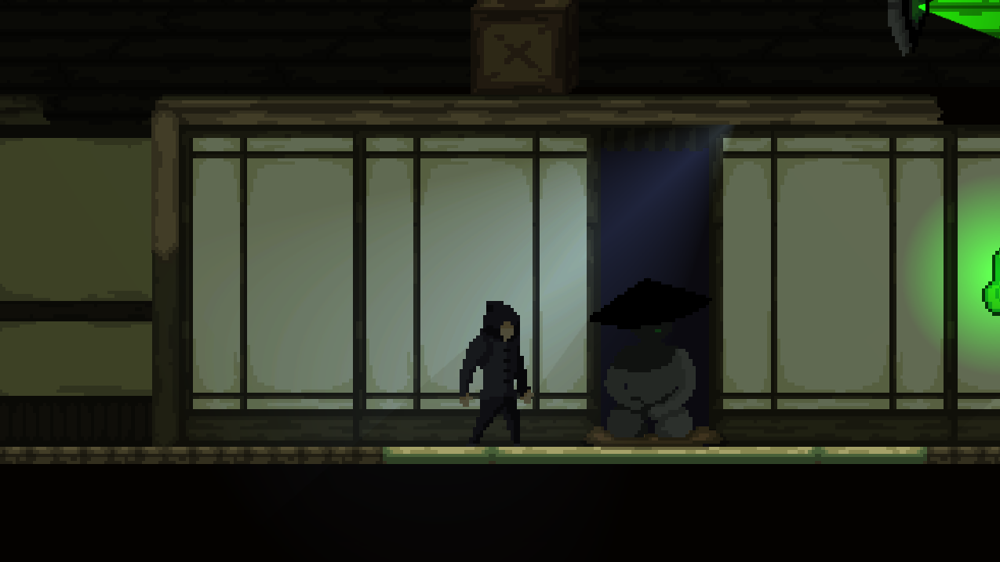
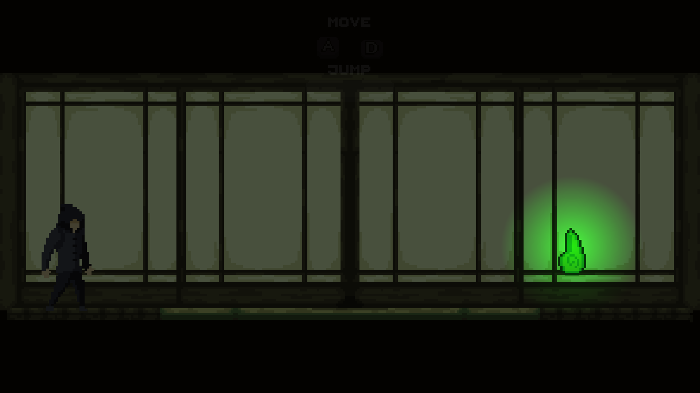
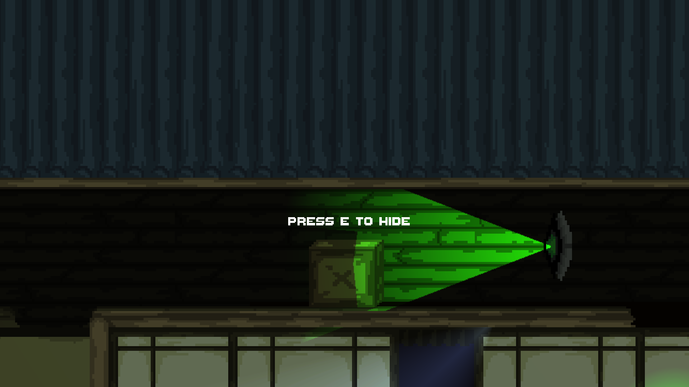
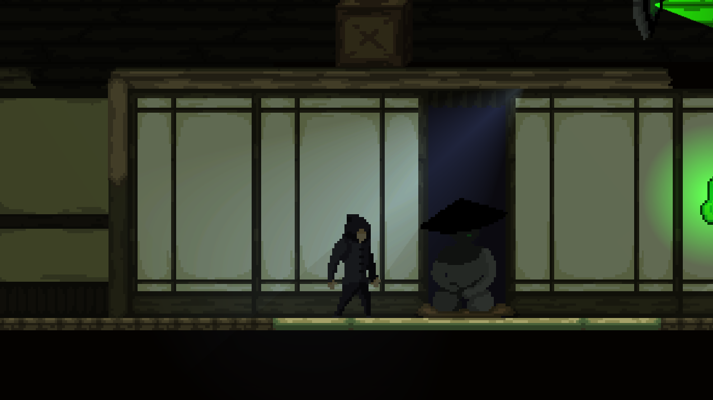
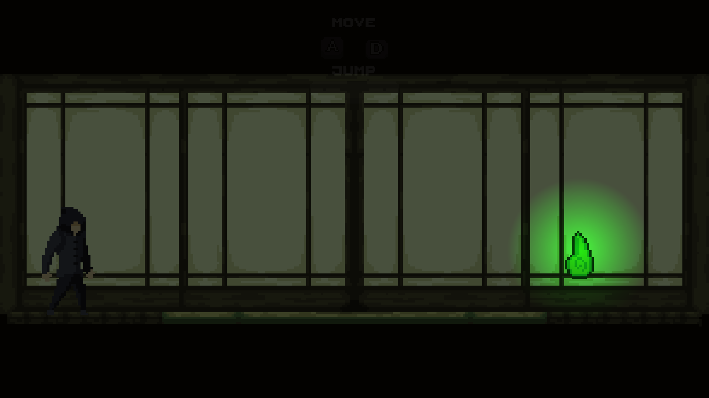
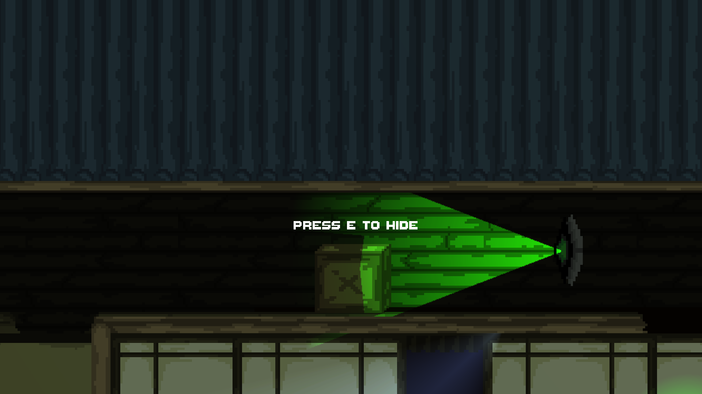
Parcel Panic is a 2-D pixel art arcade-style game made for game jam Ludum Dare 49.
The game consists of a fast-paced highscore system where the player must deliver parcels to their respective
locations before energy runs out.
The game can be played in browser here.
You play as a delivery person whose job is to grab packages dropped from buildings/houses and deliver them to their respective
locations along with a stamina bar 'time limit'. Compared to what I would usually go for in a game jam, this was a step in a
different direction. My focus this time was to refine a simple game concept to something that had more replayability.
There were many things I have taken from after the game jam had ended along with all the feedback I had received. The game's
highest rating amongst other criteria were its art and graphical design which I had hoped to be its gameplay mechanics, but
after reviewing all the feedback and taking another look at the game from a less 'time-crunched' mindset, I definitely did see
all the shortcomings the game had.
The game itself was made to be too difficult as destinations for packages would disappear
for added difficulty so you would have to remember which building it went to. Although in the game description, it was not
apparent at a glance that you had to deliver packages from left to right which I felt I could have made more clear. Last but
not least, the collisions between the player and buildings is quite clunky. When you go at an angle into a building
or fencing, you just stop instead of slide along the collider. Regardless of all of this, it was a great learning experience
and I believe that I had gotten better at realizing the scope of a game and putting a finished product out there, because this
was the first time the finished game had come close to what I had anticipated at the start of the jam.
The game has:
 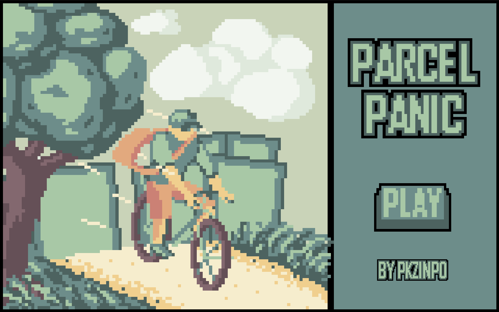
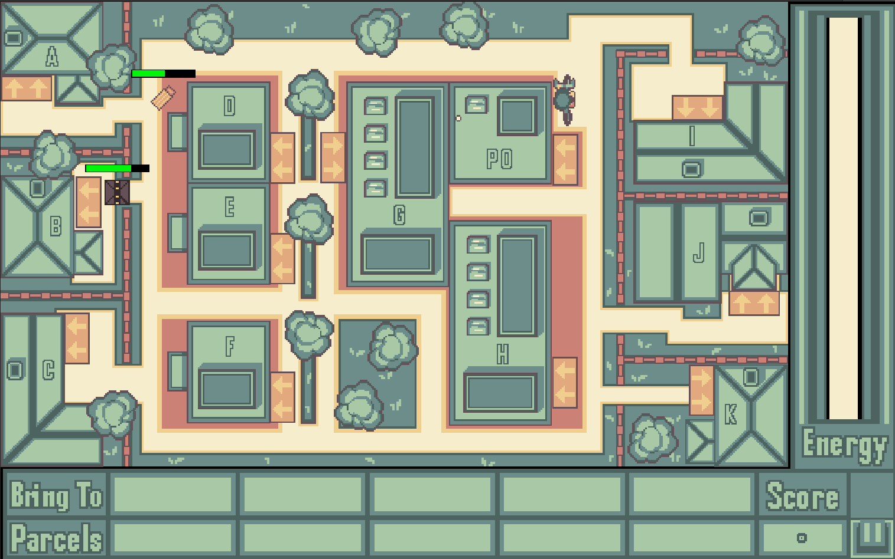
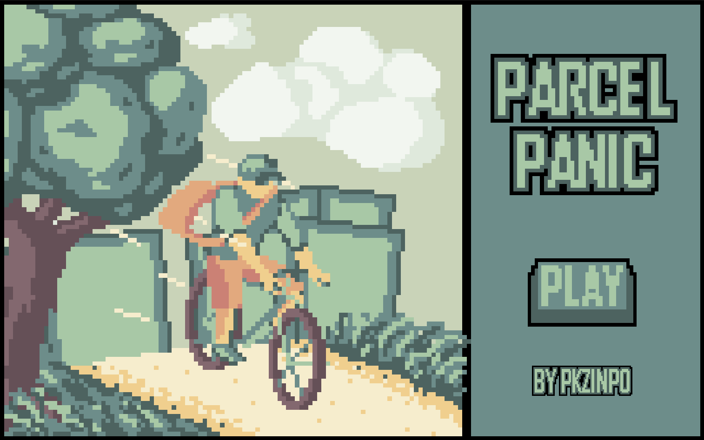
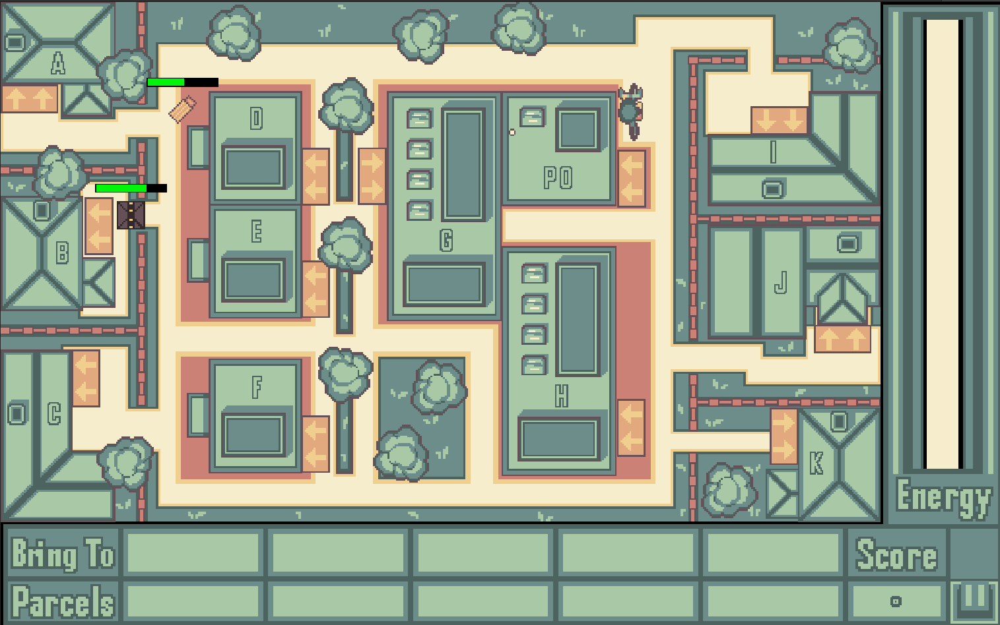
Smog is a 2-D pixel art story game made for game jam Ludum Dare 50. The game is a visual novel
style game about a kid and his guardian who live in a village where they must take shelter from a deadly smog.
The game can be played here.
You play as both the kid and his guardian in different parts of the story. Drawing inspiration from action-adventure story
heavy games like Heavy Rain and Detroit Become Human, the experience is interactive and has quick actions so that the player
must react to press the correct keys within a time limit.
For this game jam specifically, I had wanted to try something completely different than what I was used to. Something that would
push my creative boundaries. The theme for the game jam was 'Delay the Inevitable', which directly invites some sort of
survival/high-score based game. This was the direction I had thought of going initially, because it was the most obvious. However,
to learn something new, I took it a completely different direction and went more story heavy.
Multiple issues arose during the making of the game. I was not too familiar with some of the built-in features of Unity and
its cutscene making system 'Timelines', so I had ended up making all cutscenes in a script. This ultimately resulted in me
writing a lot of spaghetti code and made it inconvenient to debug. Also, my scope of the game was way too large, so there were
many features of the game I had to cut simply because I did not have enough time to implement them. I had already anticipated that
the technical/gameplay aspect would be quite low as many visual novel/story games are a simple 'press (insert button here) to
continue', so I really tried my best to emphasize the artistic style and ambience of the game. Coming to the results, they were
definitely a lot better than I would have anticipated. Landing in the top 12% for audio and graphics and the top 2% for mood,
I was more than happy with what I had accomplished, but there are definitely still many things to learn from the feedback that I
got and simply looking at the game afterwards.
The game has:
 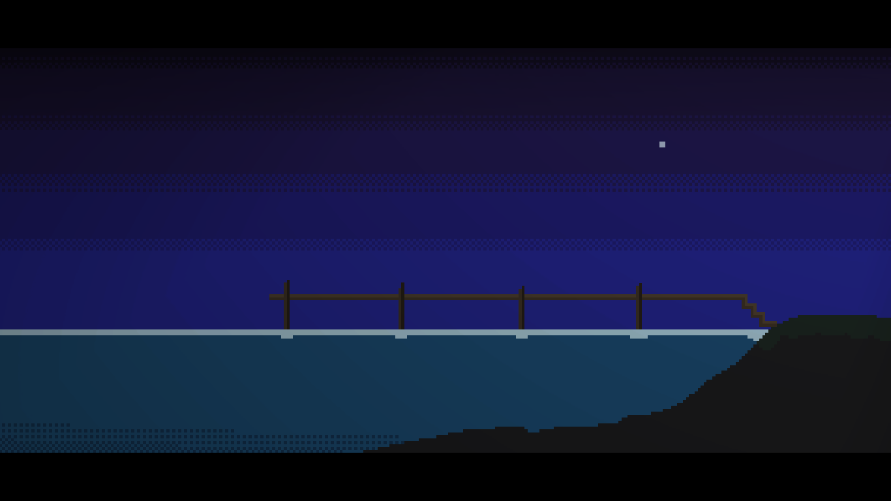
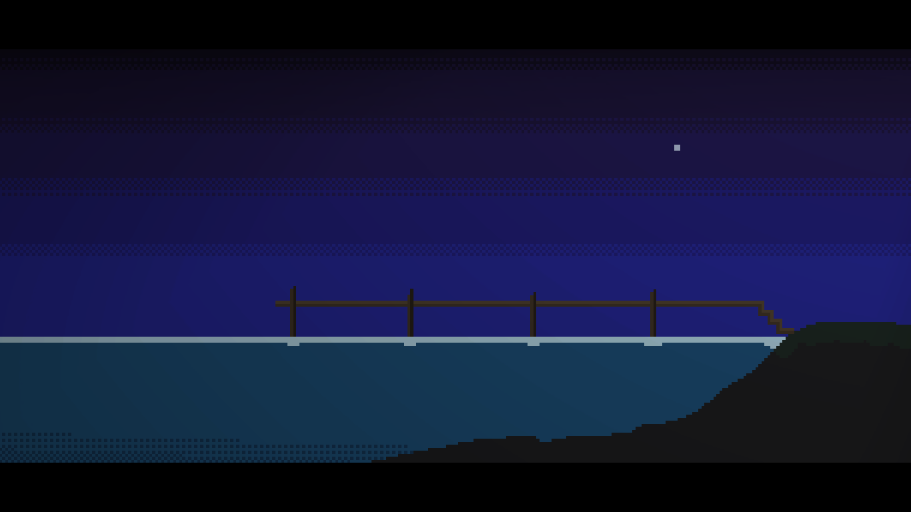
As I am always looking for different opportunities to work with others in the game developer industry, feel free to contact me if there is anything you would like to talk about!